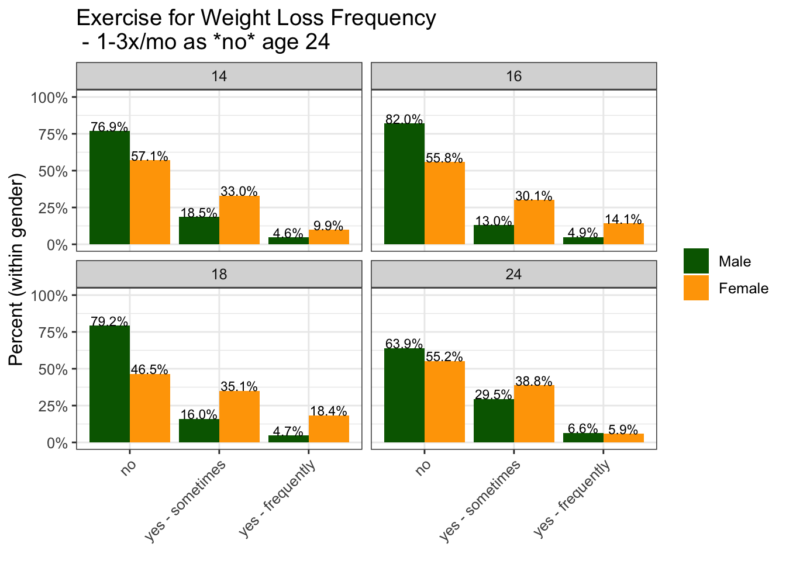
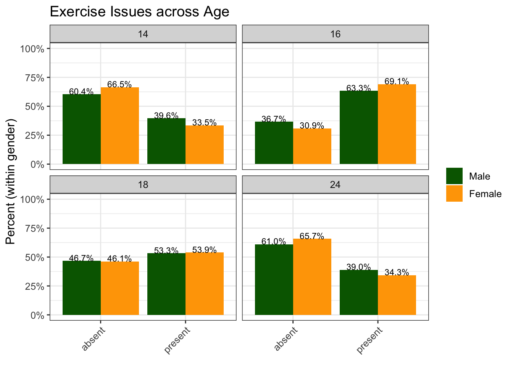
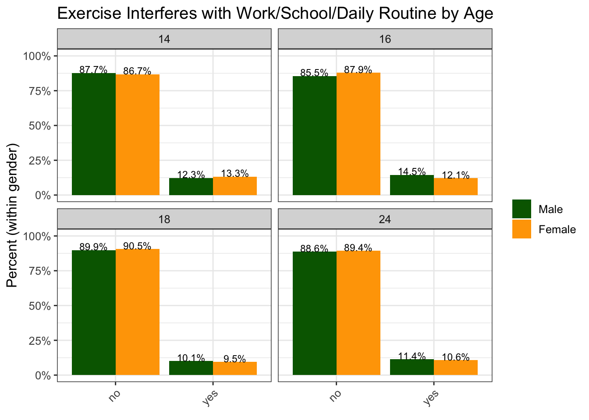
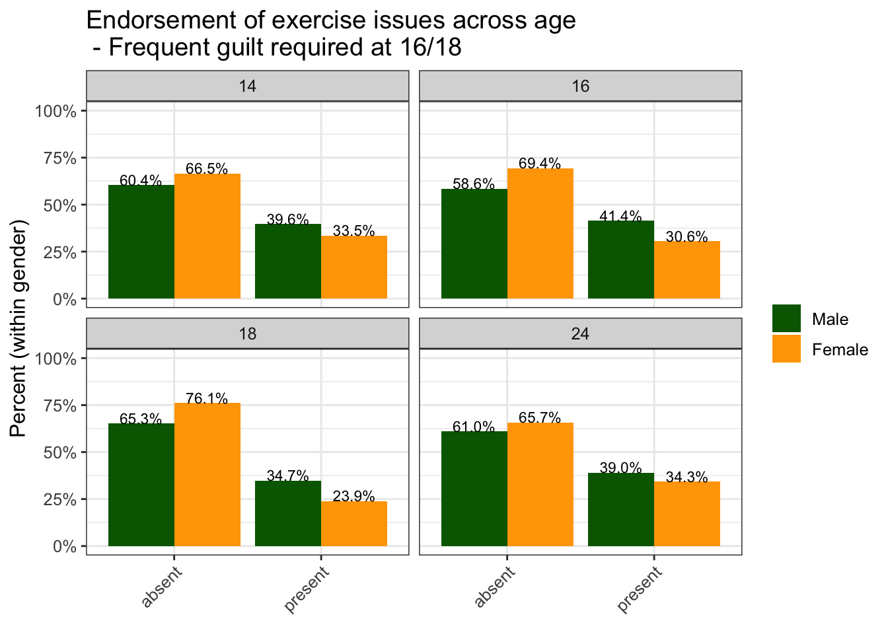
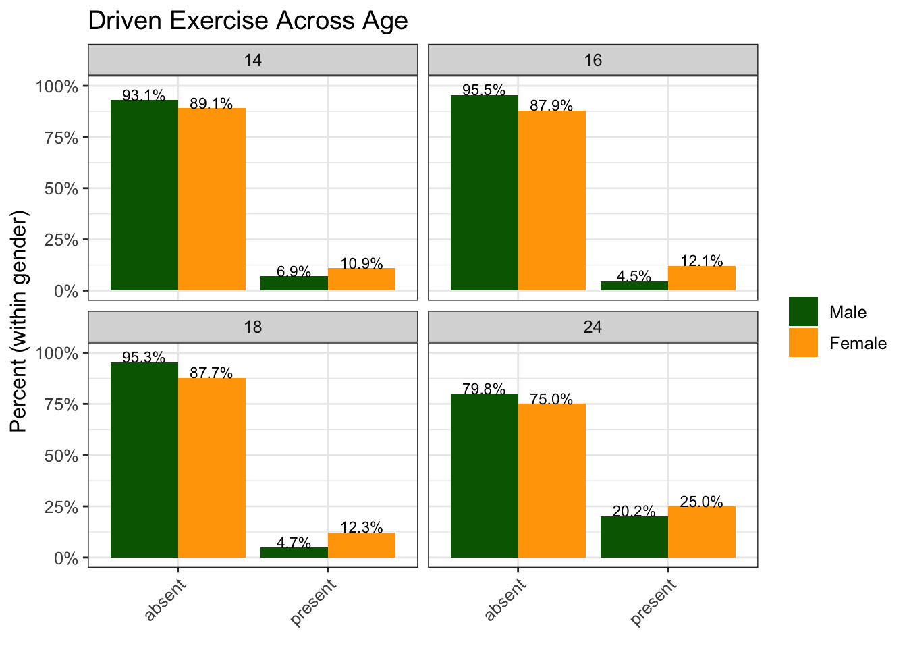
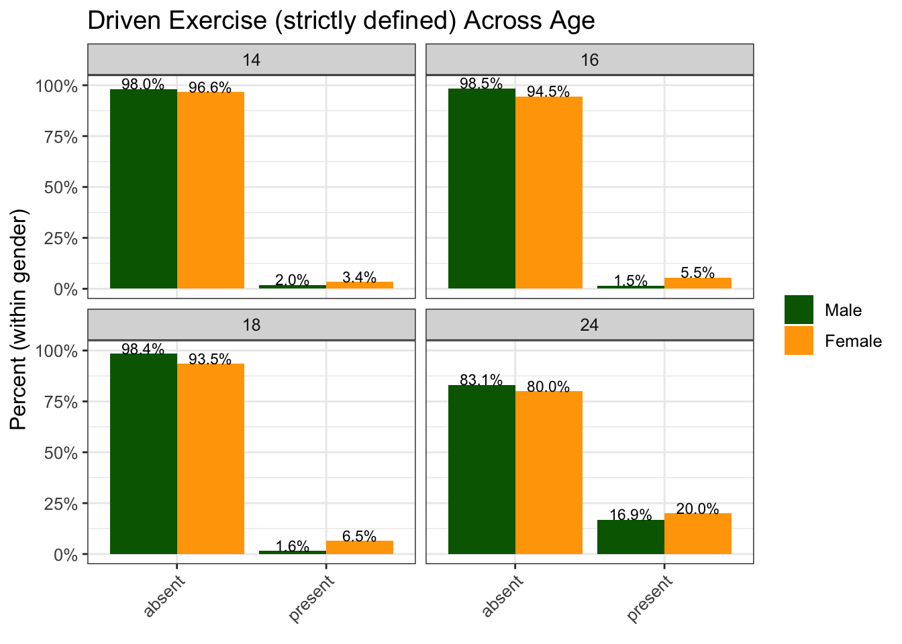
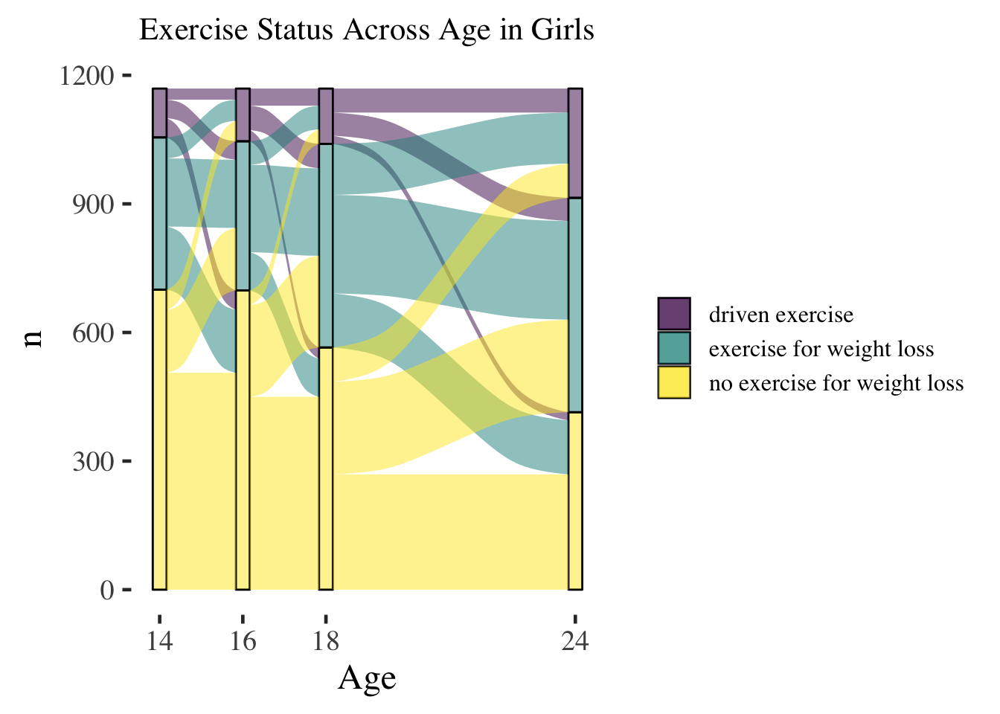
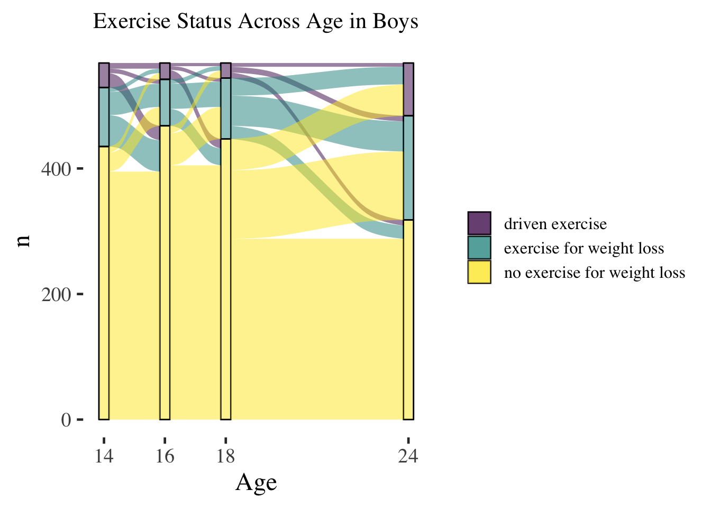
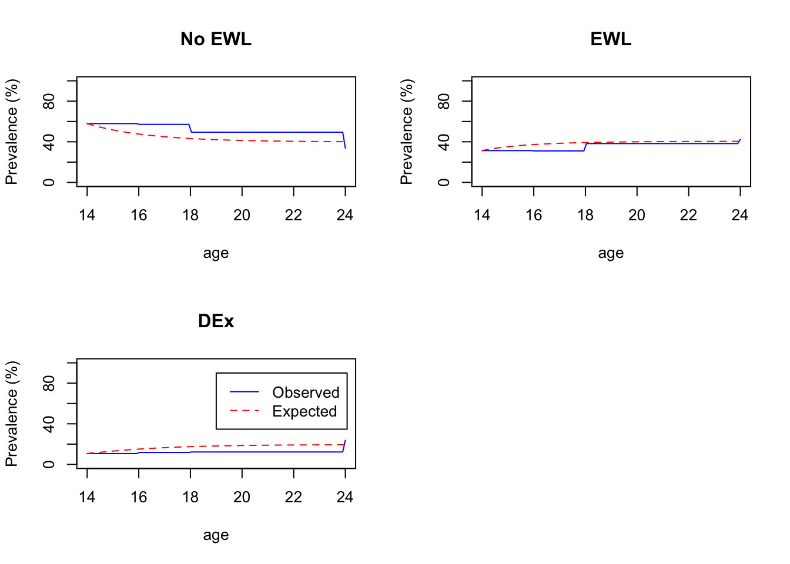
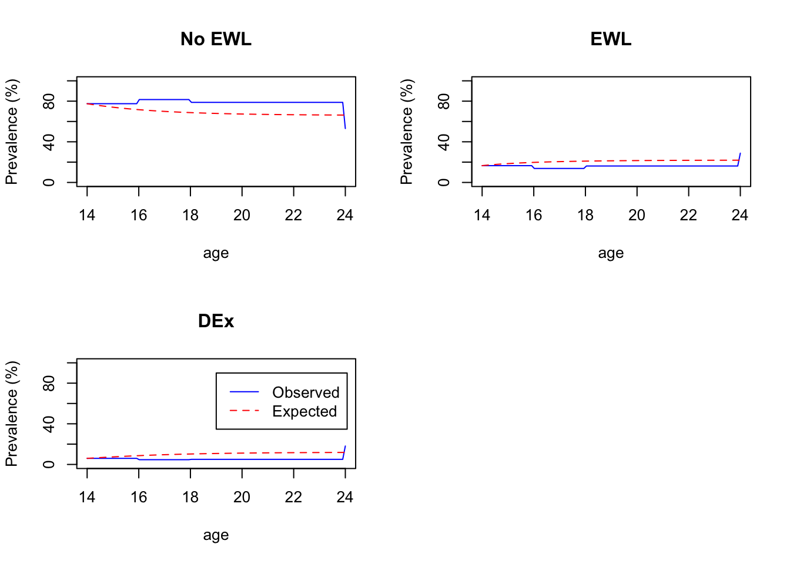

Chapter 4 Results
4.1 Descriptives
4.1.1 Exercise for Weight Loss
Rates of exercise for weight loss are presented in the graph below:

By visual examination, it appears that females report exercise for weight loss more frequently across adolescent and young adult (AYA) development, though discrepancies in exercise for weight loss between males and females may be reduced at age 24 as compared to younger ages. Overall, rates of frequent exercise for weight loss appear to increase steadily from ages 14-18 amongst girls and stay roughly the same amongst boys. It appears that there may be an uptick in reporting of exercise for weight loss in general at age 24, though it is somewhet unclear whether this represents a true increase, given that response options for the question differ somewhat at this timepoint.
Categorizing 1-3x/mo as ‘No exercise for weight loss’ at Age 24, 1-4x/wk as sometimes, and 5x/wk or more as frequently

Changing the categorization for 1-3x/mo to be ‘no’ instead of ‘sometimes’, with 1-4x/wk being ‘sometimes’ and >1x/wk as ‘frequently’, the rates of exercise for weight loss endorsement at age 24 drop somewhat, remaining higher than ages 14-18 for males and settling at similar levels to ages 14-18 for females. Overall, it seems that exercise for weight loss endorsement increases for boys at age 24, relative to younger ages, regardless of how the variable is harmonized.
Analytic Decision 4.9.2022 : KS and NM discusssion
Logically, 1-3x/mo seems to fit better in a ‘Yes- sometimes’ category as opposed to a ‘No’ category, and 1x/wk meets similar threshold to other diagnotic ; thus, **additional anlyses requiring harmonization across age for this question will proceed with categorizing <1x/mo as ‘No’, 1-3x/mo as ‘Yes-sometimes’, and 1x/wk or more as ’freqently at age 24*
- 1x/wk is a common threshold for diagnostic-level eating disorder symptoms
- Frequency of exercise has demonstrated less predictive value than psychological components of exercise in defining eating disorder risk; thus, more conservative cutoffs for frequency may miss individuals engaging in maladaptive exercise or at ED risk
Overall, it seems possible that the frequency of exercise for weight loss increases in young adulthood, relative to younger ages, due to reduced engagement in competitive sport during this time span and greater societal focus on exercise as a tool for weight management (as opposed to other benefits of exercise) in adulthood.
4.1.2 Exercise Issues
As discussed earlier, two component symptoms of driven exercise were assessed at each time point. Participants reported whether exercise interfered with work, school or daily activities at each timepoint plus one other driven exercise syptom - either feeling guilty after missing an exercise session or exercising even when sick or injured. Together, these were defined as ‘exercise related issues’, and endorsement of exercise issues across age is presented below:

It appears that endorsement of exercise issues is slightly higher at ages 16 and 18 as compared to 14 and 24. It is unclear whether this is an accurate representation or whether it could be an artifact of slightly different questions at ages 14,24 and 16,18. To investigate this possibility, we examine just the question that is asked at all four time points - whether exercise interferes with work, school, or daily routine. The graph below presents the endorsement of exercise interfering with work, school, or daily routine across age.

Consistent with data reported above, the age at which exercise is most likely to interfere is age 16; however, exercise interference at age 18 is lowest. Further, as only 10-15% of individuals report this symptom across ages, it appears that the majority of endorsment for exercise issues is arising from the second question – at ages 16 and 18, experiencing guilt after missing an exercise session. Below we examine rates of exercise issues if a more stringent cutoff is identified – i.e. individuals must report either exercise interfereing with work or school and/or guilt after missing an exercise question occurs frequently at ages 16 and 18.

Requiring guilt to be present freqently after missing an exercise session reduces endorsement of exercise issues at ages 16 and 18 to be more similar to rates at 14 and 24. Patterns here seem to reflect the pattern of exercise interfering with work, school, or daily routine across age; thus, analyses that require harmonization of exercise issues across age (i.e. defining groups reporting driven exercise) will require exercise interfering with work/school OR frequent guilt at ages 16/18 and exercise interfering with work/school/daily routine OR exercising even when sick/injured sometimes or more at ages 14/24
4.1.3 Driven Exercise
Driven exercise is defined as exercise for weight loss being present sometimes or frequently AND exercise issues being present at each age, as defined above. Overall, it seems that there is an increase in driven exercise at age 24, relative to prior ages.
In the below graph, we adjust the definition of driven exercise such that exercise for weight loss must occur frequently (‘frequently’ is self-defined at ages 14-18, and defined as 1x/wk or more at age 24). In this graph, it appears that this more strict definition of driven exercise results in substantially lower rates that are more consistent across age. In subsequent analyses, we will refer to this definition which requires frequent exercise for weight loss along with at least one issue related to exercise as ‘strictly defined’ driven exercise.

Analytic Decision 4.9.2022 KS and NM Discussion: The primary driven exercise variable will be defined as exercising for weight loss sometimes or frequently and at least one exercise issue present at each time point. Decision factors: (1) frequency of exercise may be less important than cognitive features in defining exercise risk in the context of EDs (2) The nature of the epidemiological sample and the concomitant goals of our analyses are such that we are interested in identifying early risk indicators, which may be best captured via a broad definition
Analytic Decision 4.9.2022 KS and NM Discussion: Subsequent analyses will include models of two primary variables:
- ordinal Exercise for Weight Loss (0 = No, 1 = Sometimes, 2 = Frequently)
- dichotomous Driven Exercise (0 = Absent, 1 = Present)
We will examine both of these variables as they associate with concurrent and prospective eating disorder behaviors. We will model both variables as our paper examining associations between exercise groups and concurrent ED behaviors at age 14 and prospective ED behaviors at age 16 found that both the exercise for weight loss and driven exercise groups showed similar elevations in prospective risk for ED behaviors. Thus, exercise for weight loss will be considered in addition to driven exercise.
We will also describe exercise status groups over time, replicating groups defined in Schaumberg et al. (2022), as those who report ‘no exercise for weight loss’, ‘exercise for weight loss’, and ‘driven exercise’
4.2 Transitions in Exercise Groups Over Time
Below, we examine shifts in exercise for weight loss and driven exercise over time:
The first plot shows exercise status at ages 14-24 years in girls and boys, as a percentage of the total number of boys and girls. Total numbers of boys and girls differ across timepoints in this graph, and we show raw percentages within timepoint.

Overall, it appears that percentage of males and female in the three exercise groups is relatively stable from ages 14-18, with a possible increase in exercise for weight loss at age 18 among girls, and a more substantive increase in exercise for weight loss among men at age 24 and an increase in driven exercise across gender at age 24.
In the next two graphs, we examine transitions over time amongst the subset of girls (N = 1169) and boys (N = 568) who completed all assessments, ages 14-24. Transition plot code derived from Cernat (2021).


A multi-state model to panel data relies on a Markov assumption, that future evelolution only depends on the current state.
The likelihood for this basic model, used in msm, is calculated from the transition probability matrix \(P(u; t + u)\). The \((r, s)\) entry of \(P(u; t + u)\), \(prs(u; t + u)\), is the probability of being in state s at a time t + u, given the state at time u is r.
Sampling times are ignorable if they are fixed in advance, or otherwise chosen independently of the outcome of the process
The subject id variable does not need to be numeric, but observations from the same subject must be adjacent in the dataset, and observations must be ordered by time within subjects
Below is the state table for exercise group, indicating transitions between each state. Transitions from ‘no exercise for weight loss’ to ‘driven exercise’ appear to be the least common of all transitions, wtih 164 instances of this transition.
4.2.1 Girls
## to
## from 1 2 3
## 1 2098 1003 323
## 2 617 1025 395
## 3 182 276 233
| HR | L | U | |
|---|---|---|---|
| No EWL - EWL | 1.05 | 0.94 | 1.18 |
| EWL - No EWL | 0.95 | 0.82 | 1.11 |
| EWL - DEx | 0.98 | 0.80 | 1.20 |
| DEx - EWL | 0.94 | 0.75 | 1.18 |
| HR | L | U | |
|---|---|---|---|
| No EWL - EWL | 1.28 | 1.06 | 1.54 |
| EWL - No EWL | 1.41 | 1.10 | 1.80 |
| EWL - DEx | 1.09 | 0.82 | 1.46 |
| DEx - EWL | 1.08 | 0.77 | 1.50 |
| HR | L | U | |
|---|---|---|---|
| No EWL - EWL | 1.42 | 1.28 | 1.58 |
| EWL - No EWL | 1.05 | 0.90 | 1.21 |
| EWL - DEx | 1.11 | 0.86 | 1.42 |
| DEx - EWL | 1.10 | 0.83 | 1.47 |
| HR | L | U | |
|---|---|---|---|
| No EWL - EWL | 1.01 | 0.91 | 1.12 |
| EWL - No EWL | 0.87 | 0.77 | 0.99 |
| EWL - DEx | 1.00 | 0.82 | 1.21 |
| DEx - EWL | 1.08 | 0.88 | 1.33 |
## [1] 2| HR | L | U | |
|---|---|---|---|
| No EWL - EWL | 1.448993 | 1.2741121 | 1.6478778 |
| EWL - No EWL | 1.823015 | 1.4946972 | 2.2234489 |
| EWL - DEx | 1.011553 | 0.8377693 | 1.2213869 |
| DEx - No EWL | 0.521117 | 0.3456080 | 0.7857543 |
| DEx - EWL | 1.101876 | 0.8633981 | 1.4062222 |

4.2.2 Boys
## to
## from 1 2 3
## 1 2444 454 199
## 2 275 222 94
## 3 114 44 50
| HR | L | U | |
|---|---|---|---|
| No EWL - EWL | 1.19 | 1.02 | 1.39 |
| EWL - No EWL | 1.17 | 0.97 | 1.41 |
| EWL - DEx | 3.36 | 0.71 | 15.86 |
| DEx - EWL | 3.30 | 0.70 | 15.60 |
| HR | L | U | |
|---|---|---|---|
| No EWL - EWL | 1.91 | 1.65 | 2.21 |
| EWL - No EWL | 1.06 | 0.89 | 1.27 |
| EWL - DEx | 10.39 | 1.52 | 71.12 |
| DEx - EWL | 10.07 | 1.50 | 67.56 |

4.3 Mixed Effects Models - Driven Exercise over Time
4.3.1 Girls
| Model | term | estimate | std.error | 0.25 % | 99.75 % |
|---|---|---|---|---|---|
| Baseline Model | (Intercept) | 0.132 | 0.045 | 0.007 | 0.258 |
| Age Effect Model | (Intercept) | 0.093 | 0.057 | -0.066 | 0.253 |
| Age Effect Model | Age | 1.080 | 0.007 | 1.061 | 1.099 |
| Step 1 Covariates | (Intercept) | 0.079 | 0.124 | -0.269 | 0.427 |
| Step 1 Covariates | Age | 1.080 | 0.007 | 1.062 | 1.099 |
| Step 1 Covariates | Parent SES | 1.023 | 0.034 | 0.927 | 1.118 |
| Step 1 Covariates | BMI Z - Age 13 | 1.347 | 0.030 | 1.263 | 1.430 |
| Step 2 Covariates | (Intercept) | 0.061 | 0.125 | -0.290 | 0.411 |
| Step 2 Covariates | Age | 1.081 | 0.007 | 1.062 | 1.100 |
| Step 2 Covariates | Parent SES | 1.024 | 0.034 | 0.930 | 1.118 |
| Step 2 Covariates | BMI Z - Age 13 | 1.166 | 0.029 | 1.084 | 1.248 |
| Step 2 Covariates | Fear of Wt Gain - Age 14 | 1.625 | 0.044 | 1.502 | 1.747 |
| Step 2 Covariates | Body Satisifaction - Age 14 | 1.068 | 0.038 | 0.962 | 1.174 |
| Step 2 Covariates | Thin-ideal Internalization - Age 14 | 1.138 | 0.034 | 1.041 | 1.235 |
| Step 3 Age x Cov Interactions | (Intercept) | 0.055 | 0.131 | -0.314 | 0.424 |
| Step 3 Age x Cov Interactions | Age | 1.102 | 0.010 | 1.073 | 1.131 |
| Step 3 Age x Cov Interactions | Parent SES | 1.024 | 0.034 | 0.930 | 1.119 |
| Step 3 Age x Cov Interactions | BMI Z - Age 13 | 1.151 | 0.043 | 1.030 | 1.271 |
| Step 3 Age x Cov Interactions | Fear of Wt Gain - Age 14 | 1.784 | 0.057 | 1.623 | 1.945 |
| Step 3 Age x Cov Interactions | Body Satisifaction - Age 14 | 1.135 | 0.059 | 0.969 | 1.301 |
| Step 3 Age x Cov Interactions | Thin-ideal Internalization - Age 14 | 1.220 | 0.046 | 1.091 | 1.349 |
| Step 3 Age x Cov Interactions | Age x BMI (13) | 1.003 | 0.007 | 0.984 | 1.022 |
| Step 3 Age x Cov Interactions | Age x Fear of Wt Gain (14) | 0.979 | 0.009 | 0.954 | 1.005 |
| Step 3 Age x Cov Interactions | Age x Body Satisfaction (14) | 0.987 | 0.008 | 0.964 | 1.010 |
| Step 3 Age x Cov Interactions | Age x Thin-Ideal Internalization (14) | 0.985 | 0.007 | 0.965 | 1.004 |
| statistic | df1 | df2 | p.value | riv | |
|---|---|---|---|---|---|
| Baseline vs. Age Effects | 134.731 | 1 | 235.974 | 0.000 | 0.302 |
| Age vs. Step 1 Covariates | 43.955 | 2 | 212.241 | 0.000 | 0.635 |
| Step 1 vs. Step 2 Covariates | 54.874 | 3 | 233.182 | 0.000 | 0.881 |
| Step 2 vs. Age x Covariate Interactions | 4.432 | 4 | 488.628 | 0.002 | 0.596 |
4.3.2 Boys
| Model | term | estimate | std.error | 0.25 % | 99.75 % |
|---|---|---|---|---|---|
| Baseline Model | (Intercept) | 0.050 | 0.098 | -0.224 | 0.324 |
| Age Effect Model | (Intercept) | 0.032 | 0.121 | -0.309 | 0.372 |
| Age Effect Model | Age | 1.098 | 0.010 | 1.070 | 1.126 |
| Step 1 Covariates | (Intercept) | 0.032 | 0.229 | -0.613 | 0.676 |
| Step 1 Covariates | Age | 1.099 | 0.010 | 1.071 | 1.127 |
| Step 1 Covariates | Parent SES | 0.963 | 0.050 | 0.821 | 1.105 |
| Step 1 Covariates | BMI Z - Age 13 | 1.885 | 0.052 | 1.740 | 2.030 |
| Step 2 Covariates | (Intercept) | 0.028 | 0.228 | -0.613 | 0.670 |
| Step 2 Covariates | Age | 1.100 | 0.010 | 1.071 | 1.128 |
| Step 2 Covariates | Parent SES | 0.979 | 0.049 | 0.841 | 1.117 |
| Step 2 Covariates | BMI Z - Age 13 | 1.759 | 0.047 | 1.626 | 1.892 |
| Step 2 Covariates | Fear of Wt Gain - Age 14 | 1.852 | 0.090 | 1.599 | 2.106 |
| Step 2 Covariates | Body Satisifaction - Age 14 | 1.001 | 0.058 | 0.837 | 1.165 |
| Step 2 Covariates | Thin-ideal Internalization - Age 14 | 1.168 | 0.067 | 0.980 | 1.355 |
| Step 3 Age x Cov Interactions | (Intercept) | 0.026 | 0.224 | -0.604 | 0.656 |
| Step 3 Age x Cov Interactions | Age | 1.121 | 0.014 | 1.082 | 1.160 |
| Step 3 Age x Cov Interactions | Parent SES | 0.975 | 0.048 | 0.840 | 1.111 |
| Step 3 Age x Cov Interactions | BMI Z - Age 13 | 1.789 | 0.066 | 1.604 | 1.974 |
| Step 3 Age x Cov Interactions | Fear of Wt Gain - Age 14 | 2.261 | 0.107 | 1.961 | 2.560 |
| Step 3 Age x Cov Interactions | Body Satisifaction - Age 14 | 1.000 | 0.075 | 0.790 | 1.209 |
| Step 3 Age x Cov Interactions | Thin-ideal Internalization - Age 14 | 1.180 | 0.077 | 0.963 | 1.396 |
| Step 3 Age x Cov Interactions | Age x BMI (13) | 0.997 | 0.010 | 0.968 | 1.025 |
| Step 3 Age x Cov Interactions | Age x Fear of Wt Gain (14) | 0.956 | 0.017 | 0.907 | 1.005 |
| Step 3 Age x Cov Interactions | Age x Body Satisfaction (14) | 1.000 | 0.011 | 0.970 | 1.030 |
| Step 3 Age x Cov Interactions | Age x Thin-Ideal Internalization (14) | 0.997 | 0.010 | 0.970 | 1.025 |
| statistic | df1 | df2 | p.value | riv | |
|---|---|---|---|---|---|
| Baseline vs. Age Effects | 86.949 | 1 | 201.418 | 0.000 | 0.337 |
| Age vs. Step 1 Covariates | 80.459 | 2 | 153.396 | 0.000 | 0.853 |
| Step 1 vs. Step 2 Covariates | 17.101 | 3 | 142.191 | 0.000 | 1.543 |
| Step 2 vs. Age x Covariate Interactions | 2.077 | 4 | 555.176 | 0.082 | 0.532 |
4.4 Mixed-Effect Models - Exercise for Weight Loss
We are utilizing the same approach to examine endorsement of exercise for weight loss over time in the sample, but use an ordinal model (clmm)
4.4.1 Girls
| Model | term | OR | OR LCI | OR HCI |
|---|---|---|---|---|
| Age Effect Model | 0|1 | 1.468 | 1.338 | 1.611 |
| Age Effect Model | 1|2 | 7.484 | 6.676 | 8.390 |
| Age Effect Model | Age | 1.113 | 1.097 | 1.130 |
| Step 1 Covariates | 0|1 | 2.137 | 1.674 | 2.729 |
| Step 1 Covariates | 1|2 | 10.888 | 8.423 | 14.074 |
| Step 1 Covariates | Age | 1.113 | 1.097 | 1.130 |
| Step 1 Covariates | Parent SES | 1.076 | 1.007 | 1.149 |
| Step 1 Covariates | BMI Z - Age 13 | 1.564 | 1.468 | 1.665 |
| Step 2 Covariates | 0|1 | 2.772 | 2.186 | 3.514 |
| Step 2 Covariates | 1|2 | 14.140 | 10.962 | 18.240 |
| Step 2 Covariates | Age | 1.113 | 1.096 | 1.130 |
| Step 2 Covariates | Parent SES | 1.074 | 1.011 | 1.141 |
| Step 2 Covariates | BMI Z - Age 13 | 1.366 | 1.279 | 1.459 |
| Step 2 Covariates | Fear of Wt Gain - Age 14 | 1.634 | 1.478 | 1.805 |
| Step 2 Covariates | Body Satisifaction - Age 14 | 1.074 | 0.992 | 1.162 |
| Step 2 Covariates | Thin-ideal Internalization - Age 14 | 1.101 | 1.017 | 1.191 |
| Step 3 Age x Cov Interactions | 0|1 | 3.065 | 2.397 | 3.918 |
| Step 3 Age x Cov Interactions | 1|2 | 15.755 | 12.089 | 20.532 |
| Step 3 Age x Cov Interactions | Age | 1.138 | 1.116 | 1.160 |
| Step 3 Age x Cov Interactions | Parent SES | 1.075 | 1.012 | 1.143 |
| Step 3 Age x Cov Interactions | BMI Z - Age 13 | 1.436 | 1.324 | 1.557 |
| Step 3 Age x Cov Interactions | Fear of Wt Gain - Age 14 | 1.804 | 1.614 | 2.017 |
| Step 3 Age x Cov Interactions | Body Satisifaction - Age 14 | 1.155 | 1.039 | 1.283 |
| Step 3 Age x Cov Interactions | Thin-ideal Internalization - Age 14 | 1.130 | 1.030 | 1.241 |
| Step 3 Age x Cov Interactions | Age x BMI (13) | 0.989 | 0.975 | 1.003 |
| Step 3 Age x Cov Interactions | Age x Fear of Wt Gain (14) | 0.975 | 0.957 | 0.995 |
| Step 3 Age x Cov Interactions | Age x Body Satisfaction (14) | 0.983 | 0.967 | 0.999 |
| Step 3 Age x Cov Interactions | Age x Thin-Ideal Internalization (14) | 0.994 | 0.980 | 1.008 |